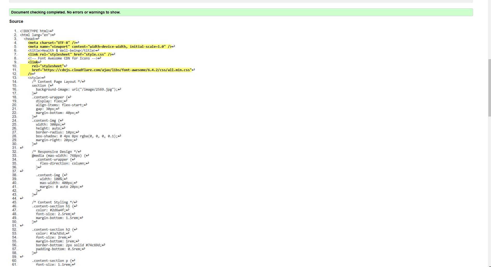

sidemap Page validation report
It includes a structured navigation menu that allows users to access various pages such as **Home, Volunteer, Statistics, User Profile, Feedback, Sitemap, and Team**. The page features an **interactive SVG-based sitemap**, visually displaying the website structure with clickable nodes for easy navigation. The **styling is handled via CSS**, ensuring a visually appealing interface with a background image, responsive design, and smooth scrolling behavior. Additionally, a **footer section** provides quick links, social media icons, and an "About Us" section to offer more information about the initiative.
The page is designed to be user-friendly, informative, and accessible, aligning with sustainable development goals...
Back to Page Editor page
Include a link back to the corresponding section of the Page Editor.
profile Page validation report
This HTML document presents a **User Profile Page** for the **Good Health & Well-being** initiative, designed with a **responsive layout** and interactive elements. It features a **navigation menu** for easy access to different sections of the website, such as **Home, Volunteer, Statistics, User Profile, Feedback, Sitemap, and Team**. The **profile section** includes user details like name, age, weight, and height, accompanied by a profile picture. Additionally, an **availability calendar** allows users to track important dates. The page also includes a **"Goals" section**, outlining career and academic aspirations with a **progress bar** to visually represent achievement levels.
A **"Contact Me" form** enables user interaction, and an **"About Me" section** provides insights into the user's background and expertise.
The **footer** contains quick links, social media icons, and an "About Us" segment, reinforcing accessibility and connectivity. The entire page is styled with **CSS**, ensuring a visually engaging, user-friendly experience that aligns with sustainable development goals.
Back to Page Editor page
Include a link back to the corresponding section of the Page Editor.
Content Page validation report
The **Health & Well-being** webpage offers users essential information on maintaining a healthy lifestyle and improving mental well-being. It features a top navigation bar with sections like **Home, Volunteer, Statistics, User Profile, Feedback, Sitemap,** and **Team**. The content is organized into sections, including an **introduction**, **physical health tips**, **mental health advice**, and a **resources section** linking to credible organizations like the WHO and CDC. Styled with **CSS**, the page is responsive, adapting to both desktop and mobile devices using a **flexbox layout** . Interactive elements like **hover effects** and **Font Awesome icons** add modern flair. The **footer** includes the website’s purpose, quick links, and social media icons. A **Page Editor** link is also available for modifications, ensuring a seamless and engaging user experience. 🚀
Back to Page Editor page
Include a link back to the corresponding section of the Page Editor.